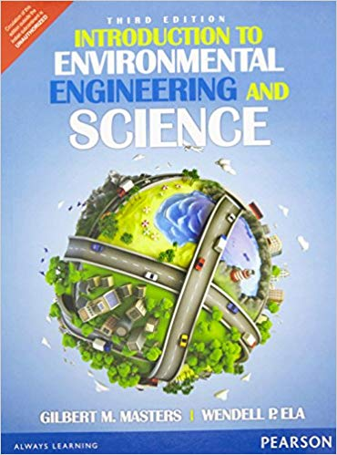
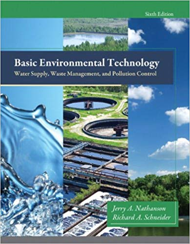
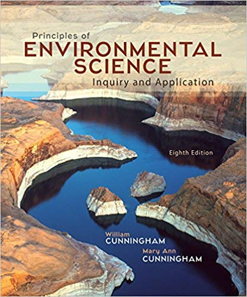

| Introduction to Enviromental Engineering | ||
|---|---|---|
| Author: | Masters |  |
| Publisher: | Pearson India | |
| Edition: | 3rd edition | |
| E-Book: | Download E-Book | |
| Basic Environmental Technology: Water Supply, Waste Management and Pollution Control | ||
|---|---|---|
| Author: | Jerry A. Nathanson M.S. P.E |  |
| Publisher: | Pearson | |
| Edition: | 6th edition | |
| E-Book: | Download E-Book | |
| Principles of Environmental Science | ||
|---|---|---|
| Author: | William P Cunningham |  |
| Publisher: | McGraw-Hill Education | |
| Edition: | 8th edition | |
| E-Book: | Download E-Book | |